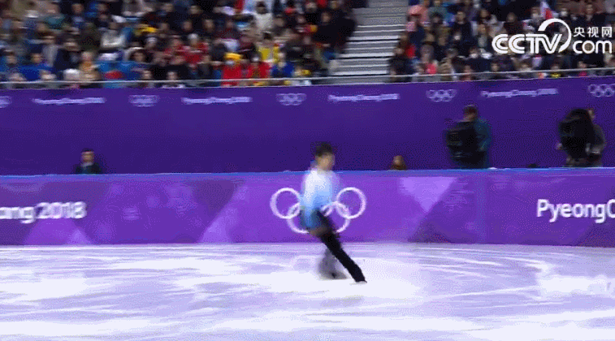

四年前索契冬奥会上，19岁的羽生结弦成为66年内最年轻的冬奥会花滑男单冠军和亚洲第一位花滑男单冬奥冠军，创造了历史。
4年后，在2月17日刚刚结束的平昌冬奥会花样滑冰男子单人滑比赛中，羽生结弦再摘金牌，创造了近66年来第一个卫冕男单冬奥冠军的历史。
短节目比赛，羽生结弦以尽善尽美的表演，赢得了111.68分，高出第二名西班牙名将菲尔南德兹4.10分。自由滑，羽生结弦再次以舒展大气、优雅的表演和近乎完美的技术，获得了206.17分的高分，最后毫无争议地以317.85分摘得这枚最抢手的金牌。这一成绩比获得亚军的另一名日本名将宇野昌磨高出了10.95分之多。
“这是我滑冰生涯中最开心的一天！”走下冠军领奖台，羽生结弦激动地流下泪水，“离开的这段时间，自己几乎每天都在想念滑冰，我非常渴望重回赛场，今天我终于回来了，并再次获得了冠军，我的泪水来自我的内心，非常高兴。”

| 返回上一页 |
| 返回首页 |